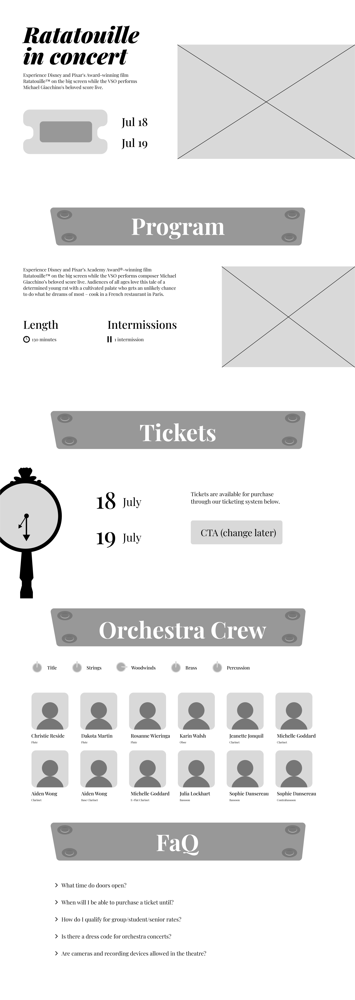
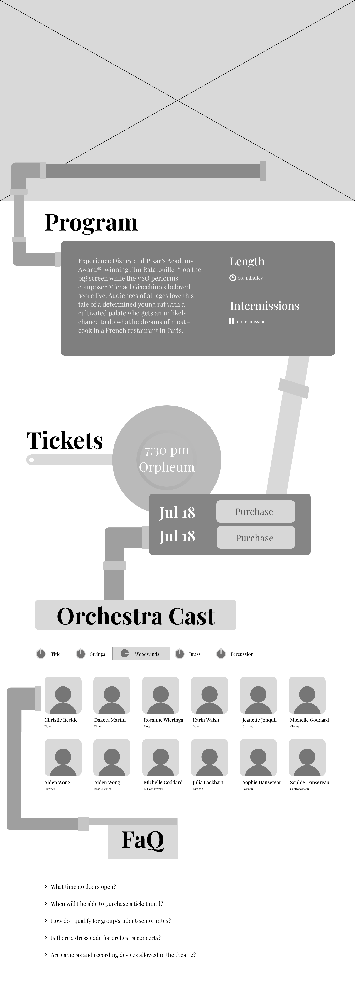

First, Simple Wireframe

Second, Ambitious Wireframe
The first task of designing the website was to create wireframes based on Ratatouille’s art themes. I envisioned the site to feel like you’re exploring the environment of Ratatouille’s Paris through similar objects, colours, and music. I created two wireframes of varying themes and styles.
The first wireframe is simple and was overall more structured. It also heavily focuses on iconography, such as the clock in “Tickets” to tell the time of the concert.
The second wireframe is less structured, espeically with the sporadic pipes connecting each of the sections together. This wireframe was used for our final website because the pipes were playful and gave the site a unique factor.